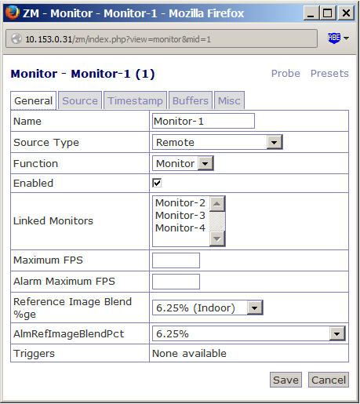
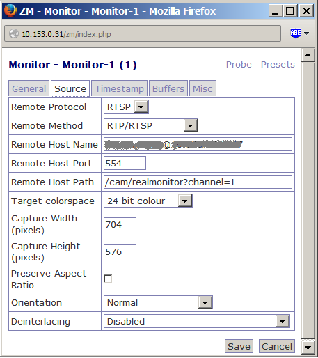
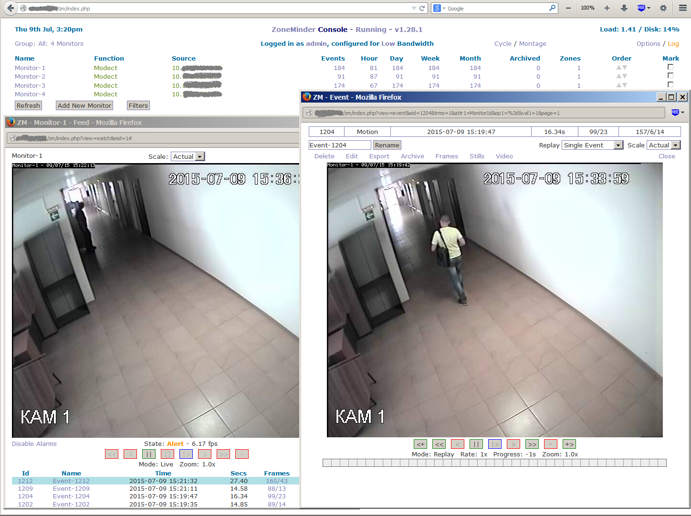
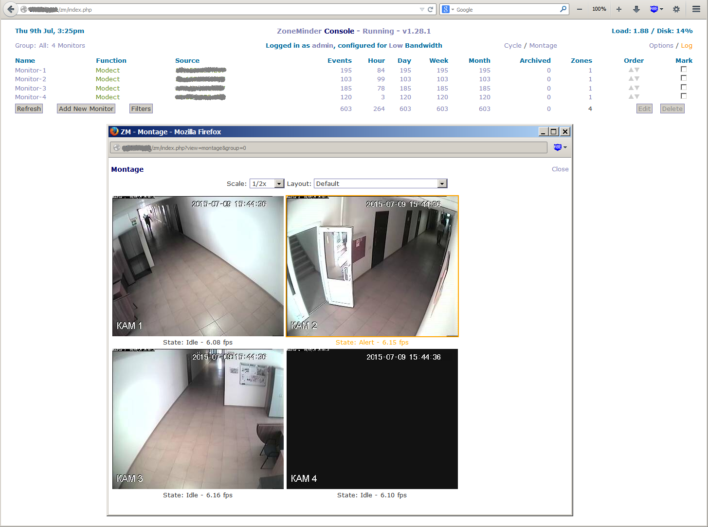

Установка ZoneMinder 1.28.1 из GitHub
Удалил ZoneMinder 1.25.0 (установленный ранее из репозитария) через команду:
# aptitude purge zoneminder
Получил исходники стабильной ветки с GitHub. Ссылка на страницу с исходниками:
https://github.com/ZoneMinder/ZoneMinder
Команда загрузки:
git clone https://github.com/ZoneMinder/ZoneMinder.git zoneminder;
Сборку делал от обычного пользователя по следующей официальной инструкции (на GitHub):
Установка необходимых пакетов для Debian 7:
root@host:~# aptitude install -y apache2 mysql-server php5 php5-mysql build-essential libmysqlclient-dev libssl-dev libbz2-dev libpcre3-dev libdbi-perl libarchive-zip-perl libdate-manip-perl libdevice-serialport-perl libmime-perl libpcre3 libwww-perl libdbd-mysql-perl libsys-mmap-perl yasm automake autoconf libjpeg8-dev libjpeg8 apache2-mpm-prefork libapache2-mod-php5 php5-cli libphp-serialization-perl libgnutls-dev libjpeg8-dev libavcodec-dev libavformat-dev libswscale-dev libavutil-dev libv4l-dev libtool ffmpeg libnetpbm10-dev libavdevice-dev libmime-lite-perl dh-autoreconf dpatch;
Сборка:
cd zoneminder
ln -s distros/debian
dpkg-checkbuilddeps
dpkg-buildpackage
В результате на каталог выше каталога с исходниками zoneminder появятся следующие файлы:
ls -l | grep zoneminder
-rw-r--r-- 1 xi xi 1309 Июл 7 10:10 zoneminder_1.28.0-wheezy.dsc
-rw-r--r-- 1 xi xi 1655 Июл 7 10:10 zoneminder_1.28.0-wheezy_i386.changes
-rw-r--r-- 1 xi xi 2463450 Июл 7 10:10 zoneminder_1.28.0-wheezy_i386.deb
-rw-r--r-- 1 xi xi 45269763 Июл 7 10:10 zoneminder_1.28.0-wheezy.tar.gz
-rw-r--r-- 1 xi xi 283250 Июл 7 10:10 zoneminder-dbg_1.28.0-wheezy_i386.deb
Здесь уже готов пакет (выделен жирным шрифтом), дальнейшие шаги прописаны в документации, но вроде как не нужны:
The dpkg command itself does not resolve dependencies. That's what high-level interfaces like aptitude and apt-get are normally for. Unfortunately, unlike RPM, there's no easy way to install a separate deb package not contained with any repository.
To overcome this "limitation" we'll use dpkg only to install the zoneminder package and apt-get to fetch all needed dependencies afterwards. Running dpkg-reconfigure in the end will ensure that the setup scripts e.g. for database provisioning were executed.
root@host:~# dpkg -i /root/zoneminder_1.26.4-1_amd64.deb; apt-get install -f;
root@host:~# dpkg-reconfigure zoneminder;
Alternatively you may also use gdebi to automatically resolve dependencies during installation:
root@host:~# aptitude install -y gdebi;
root@host:~# gdebi /root/zoneminder_1.26.4-1_amd64.deb;
Установил полученный пакет zoneminder-dbg_1.28.0-wheezy_i386.deb , доустановил требуемые пакеты, и все сразу заработало.
Настройки мониторинга с камеры по протоколу RTSP:


Общий вид окна ZoneMinder (клик по монитору Monitor-1, клик по событию):

Обзор сразу со всех камер наблюдения (клик по пункту Montage):

|
Знаете ли вы, что: Установка и настройка систем видеонаблюдения - это дело хлопотное, которое лучше доверить профессионалам. Установкой видеонаблюдения занимается компания SotaSot: ее специалисты подберут оборудование и ПО, установят камеры и настроят сервер в лучшем виде. |